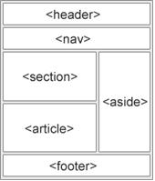

Aula 2 - HTML5
O HTML é a linguagem básica para criação de páginas Web(Versão HTML5). Esta nova versão traz consigo importantes mudanças quanto ao papel do HTML no mundo da Web, através de novas funcionalidades como semântica e acessibilidade. E vem com diversos suportes para sistemas móveis e diversos dispositivos.
Ele serve para definir toda estrutura da página, a organização, a semântica do documento e a indexação. E funciona em conjunto com o CSS para dar aparência aos elementos como estilos, fontes e cores. E com o JavaScript deixam as páginas dinâmicas, como por exemplo enviar conversas pelo chat e notificações em sites.
O HTML5 é um padrão aberto, criado por dois grupos:
- W3C - Word Wide Web Consortium W3c
- WHATWG - Web Hipertext Application Technology Working Group WHATWG
O W3C é o órgão que cuida das tecnologias Web, HTML, CSS, JavaScript e os padrões dos browser. Antigamente alguns browser como o internet explorer 6 da Microsoft não seguiam os padrões do W3C. Por conta disto dificultava muito a programação para browsers desses estilos, era preciso programar uma página para esses browsers que não seguiam o padrão e uma página para as páginas que seguiam o padrão.
O WHATWG é um grupo de trabalho de pessoas interessadas na evolução do HTML e as tecnologias ligadas a tal. Diferente do independente World Wide Web Consortium (W3C) o WHATWG é mantido por pessoas ligadas a entidades e empresas como a Mozilla Foundation, Opera Software ASA e Apple Inc.
Mas os dois juntos definem como será o HTML, e acompanhando os sites das duas organizações, pode-se ter ideia de quais serão as novas tecnologias dos próximos HTML.
O princípio do HTML é a não utilização de plugins pesados para exibir conteúdo de páginas, e sim utilizar o HTML junto com CSS e JavaScript, por que? Por conta que estes plugins aumentam a vunerabilidade da sua aplicação.
Com isso, você não consegue acessar dados mais sensíveis, como ter que fazer upload de arquivos, por conta que não tem acesso total ao disco(c:) do usuário, ou acessos a periféricos como web cam ou microfone, fazendo solicitações para que isso aconteça.
Um fator chave do HTML5 é que ele tem que ser multiplataforma, por conta do alto número de acessos via smartphones, tablets, e até mesmo smart TV.
E com a utilização das 3 tecnologias, HTML, CSS e JavaScript para construir uma página é necessário a organização de todas essas ligaguagens, para que se tenha um fácil acesso e que consiga achar inconsistências nos códigos e ter uma visão melhor no cresimento e manutenção da página.
História
Em 1989 a melhor forma de compartilhar informações era através de e-mail, grupos de notícias (newsgroup), e servidores ftp. Acessava através de um desses diversos documentos, a maoria desses documentos eram arquivos de textos e artigos. Mas para cada um desses protocolos tinha um Software específico, o que dificultava mais ainda.
Tim Berners-Lee propôs a ideia de hipertextos, que era uma solução melhor, ele foi o idealizador do HTTP e também pelo HTML, na qual a linguagem de marcação para compartilhar os documentos usando formatação com links, gráficos e diagramas.
Antigamente era comum termos páginas como se fossem listas telefônicas, mas com links direcionando para outras páginas que tratavam de algum assunto específico.
No final do ano de 1989, ele propôs também um piloto de um projeto, uma lista de tags do HTML, que está disponível no link: http://www.3.org/History/19921103-hypertext/hypertext/WWW/MarkUp/Tags.html A proposta era um protocolo cliente/servidor para documentos hipertextos.
O arquivo inicial possuia 18 tags para definição e formatação de documentos. Neste documento contém as especificações de como seria, o link para o documento é: http://www.w3.org/MarkUp/draft-ietf-iiir-html-01.txt
Em 1991 Berners-Lee publicou o primeiro Web browser, e em 1993 publicou uma biblioteca portável em C chamada de libwww, que permitia o parcer e a renderização das páginas usando HTML, logo após lançar o HTML.
Devido essa liberação da criação de browsers, teve a guerra de browsers, mesmo a grande maioria utilizando o internet explorer. Após o netscape não aguentar e fechar, eles liberaram o código-fonte de todo navegador, fazendo com que surgisse outros grandes navegadores como mozila, mozila firefox, google chrome, e depois o google investiu no motor v8, que é o motor JavaScript.
O HTML é uma linguagem bem permissiva, pode-se ver isso como por exemplo na tag de negrito, que caso não feche, ela apenas irá deixar tudo negrito a partir do momento que abriu, mas não quebrará a página e deixará de exibir ela. No início o HTML era simplesmente para mostrar hipertextos para os usuários, como por exemplo os artigos científicos com as formatações destes estilos. Mas com o tempo surgiu a Web 2.0, que veio falar que a internet é muito poderosa, e por que não utilizar essa rede para fazer sites com as funcionalidades de sistemas, sem a nescesidade de instalação.
HTML5
Neste novo padrão temos a presença da mesma renderização da CPU, pelo openGL, tem o WGL, que nada mais é o browser renderiza na GPU, isto era imaginável no HTML4. Com isto, o HTML consegue um pequeno avanço, como por exemplo, podemos rodar aqueles jogos diretamente no browser, claro que tem questões de instabilidade e performace, mas com o tempo isso pode e deverá ser resolvido, excluindo a necessidade de instalação de jogos pesados na máquina.
Funcionalidades:
- Estruturação do texto
- Semântica do documento
- Validação de formulários
- Elemntos gráficos(WebGL)
- HTML5 Api: Geolocalização, Drag and Drop, Armazenamento local, Web Workers, Cache.
Estrutura do HTML5
O HTML é uma linguagem de marcação, e não uma linguagem de programação. Em uma linguagem de programação é possível criar programas complexos, que tomem decisões, já no HTML não é possível fazer isto.
Os elementos do HTML são definos por Tag, a estrutura é definida por abertura e fechamento das Tags, assim <Tag> </Tag> e temos as Tags vazias que abre e fecha, assim <TagVazia/>, usada quando a Tag não tem conteúdo, então nas tags temos os tipos:
- Abertura de Tag: <Tag>
- Fechamento de Tag: </Tag>
- Tag Vazia: <TagVazia/>
- Comentários: <!-- comentário -->
Apesar do HTML ser uma linguagem muito permissiva como dito anteriormente, como a maoria das linguagem existem as suas boas práticas, para que seu código seja mais legível. Essas boas práticas não inflenciam no funcionamento, apenas faz com que seu documento seja bem formável, que é um documento que siga a sintaxe correta, e as boas práticas de organização.
Algumas boas práticas são:
- Todas as tags são sintaticamente corretas ou seja toda tag aberta em letra minúscula assim <p> deve ser fechada em minúscula, assim </p>, o mesmo se for maiúscula.
- Todas as tags abertas precisam ser fechadas podendo ser tags vazias que já fecham, exemplo <TagVazia/>, mas todas as outras precisam ser <p>Olá mundo</p>.
- Todos os atributos devem ser delimitados com aspas como o exemplo na imagem definida com um src, que é o caminho dela <img src=" ">
- As tags devem ser fechadas na ordem de sua abertura: por exemplo o negrito que pode ser aberto usando o <b>, mas não é uma boa prática usar <b><i></b></i>, então a boa prática seria <b><i></i></b>
A seguir temos a estrutura básica para ter um arquivo HTML5:
<!DOCTYPE html>
<html lang="pt">
<head>
<meta charset="UTF-8">
<title> Título do Documento </title>
</head>
<body>
Conteúdo do site.
</body>
</html>
No começo do documento defininos o formato do nosso documento de marcação usando o <!DOCTYPE html>, ou colocando o <!DOCTYPE xml>, ou outro formato de marcação.
Na Tag HTML temos o lang como atributo para sinalizar a idioma do site, os pacotes de idioma não estão relacionados com o HTML, e sim com o navegador. O navegador não irá traduzir, só irá identificar que está em português, ou qual idioma estiver.
Dentro no head colocamos a codificação de caracteres utilizando o <meta charset="UTF-8">, por que não será sempre correto, por variações de editor de texto, ou sistema operacional, ou como salva, as vezes saíra sem pontuação, ou com pontos de interrogação.
Além disto podemos adicionar mais coisas, para facilitar a indexação e o usuário. Como por exemplo a acessibilidade, tipo um usuário com deficiência visual, que irá precisar de um leitor de tela, que poderá ler esses metadados, um deles é o charset, mas pode-se criar metadados específicos, como o keywords, que destaca as palavras chaves na indexação.
<!DOCTYPE html>
<html lang="pt">
<head>
<meta charset="UTF-8">
<meta charset="keywords" content="curso html uenp"/>
<title> Título do Documento </title>
</head>
<body>
Conteúdo do site.
</body>
</html>
No head também é possivel ligar um arquivo CSS que esteja com a extensão ".css" para que carregue os estilos em um documento separado para que seja mais organizado e não fique todos os estilos dentro no HTML. Usando a tag
<!DOCTYPE html>
<html lang="pt">
<head>
<meta charset="UTF-8">
<meta charset="keywords" content="curso html uenp"/>
<link rel="stylesheet" href="style.css">
<title> Título do Documento </title>
</head>
<body>
Conteúdo do site.
</body>
</html>
Temos também a tag viewport que serve para ajustar o tamanho do documento com o tamanho dos dispositivos acessados, então se entra em um computador de mesa terá uma tela um pouco maior hoje em dia, bem comum ter monitores acima de 20 polegadas, e até mesmo na sua tv quando acessa por ela na qual pode ser de 60 a 70 polegadas, ou até mesmo em seus smartphones no qual são menores as telas e tendo duas resoluções por conta dos dois modos de uso. A tag é essa <meta name="viewport" content="width=device-width, initial-scale=1.0">.
<!DOCTYPE html>
<html lang="pt">
<head>
<meta charset="UTF-8">
<meta name="viewport" content="width=device-width, initial-scale=1.0">
<meta charset="keywords" content="curso html uenp"/>
<link rel="stylesheet" href="style.css">
<title> Título do Documento </title>
</head>
<body>
Conteúdo do site.
</body>
</html>
E é possivel colocar tags de autor para saber o nome do autor do documento. Essa tag é <meta name="author" content="John Doe">.
<!DOCTYPE html>
<html lang="pt">
<head>
<meta charset="UTF-8">
<meta name="author" content="John Doe">
<meta name="viewport" content="width=device-width, initial-scale=1.0">
<meta charset="keywords" content="curso html uenp"/>
<link rel="stylesheet" href="style.css">
<title> Título do Documento </title>
</head>
<body>
Conteúdo do site.
</body>
</html>
Algumas tags e suas funcionalidades: temos as tags do "h1" ao "h6", na qual é seus cabeçalhos. e normalmente são usados para títulos e subtítulos, por conta que um HTML tem um formato de documento.
<h1>Isto é um cabeçalho </h1>
<h2>Isto é um cabeçalho </h2>
<h3>Isto é um cabeçalho </h3>
<h4>Isto é um cabeçalho </h4>
<h5>Isto é um cabeçalho </h5>
<h6>Isto é um cabeçalho </h6>
Outra forma de mostrar os dados é a tag "p", usada assim <p></p>. Uma coisa importante é o o espaçamento, mesmo que tenha um monte de espaços ou quebras de linhas que não mudará, mostrará um espaço e continuará na mesma linha.
E para pular de linhas temos duas tags, a "br" que não é muito utilizada, que seria <br>, não é usada por conta de que se diminuir ou aumentar a tela ou alterar o tamanho da letra pode desconfigurar a visualizuação. E também tem a "pre", usada <pre></pre>, usada muito para visualizar os dados como foi digitado, muito usada para código-fonte.
<p>Isto é um paragrafo, mas como
está dentro de um pre se eu por esse espaço na hora de
visualizar irá aparecer. E irá quebrar a linha quando eu colocar
na linha debaixo</p>
<p>Isto é um páragrafo, sem usar a tag pre mesmo se eu por esse espaço na hora de visualizar não irá aparecer. E mesmo quebrando a linha não irá aparecer, irá até o final da página.</p>
<p>Isto é um exemplo do <br>
Ele quebra a linha</p>
<pre>
Este é a tag
nesta tag aparecerá
da forma
como
foi digitada.
</pre>
-
Elementos mais comuns:
- <!DOCTYPE> html que é a declaração de um domumento HTML5
- <head> elemento da meta infotmações sobre a página
- <body> elemenento que define o corpo do documento, todo conteúdo visível
- <title> elemento mostra o título da página HTML
- <h1>, <h2>, <h3>, <h4>, <h5>, <h6> elementos de cabeçalho de diferentes tamanhos
- <p> elemento que define um parágrafo
para mais informações sobre HTML consultar: w3scools
Semântica
A semântica indica, para o navegador e para o desenvolvedor o que cada elemento significa. Hoje em dia quaisquer navegadores atuais suporta os elementos do HTML5.
As vantagens de utilizar uma tag semântica é a facilidade de organizar o conteúdo das páginas e melhorar indexação do motor de busca. Isto é importante por que se tiver uma página bonita mas não tiver uma boa indexação não aparecerá nas pesquisas do google.
Antigamente antes do conceito da semântica a tag usada para dividir os conteúdos era a "div" e coloca um "id" ou uma "class" para indicar qual era a organização dela. Exemplo:
- Navegação: <div id="nav"></div>
- Cabeçalho: <div id="header"></div>
- Rodapé <div id="footer"></div>
O problema era que a "div" não era semântica e universal, poderia ter um rodapá ao invés de um footer e o navegador não entenderia. Já no HTML5 tem as tags semânticas: "header", "nav", "section", "article", "aside", "footer". Sendo organizadas assim:
O elemento "section" define uma seção do documento, ele tem o mesmo comportamento de uma "div".
E o elemento "article", que é um artigo, é uma parte do documento auto contido. Pode-se ter dentro de uma "section" que define onde haverá um texto corrido, por exemplo de um site de noticias.
Já o "header" é o cabeçalho de uma "section" ou de um "article", para definir cabeçalho, resumo, título e autores.
Quando trabalha-se com semântica, tem que tomar cuidado com as boas práticas, por conta que algumas coisas que faziam antes no HTML4 não é mais usado no HTML5. Como por exemplo:
Todos os links de navegação estaram na tag
nav, para que possa identificar no documento.
Usando tag <nav></nav>
Todos os dados estruturados seram colocados
na tag table que é a tag para uma tabela.
Usando a tag <table></table>
O layout não serem mais usados com a tag table,
usa-se a tag div ou as tag semântica.
Usando a tag <div></div>
As imagens serão mostradas usando a tag img,
com um texto alternativo dentro da tag img.
Usando a tag com o alt dentro dela assim,
<img src="" alt="texto alternativo">